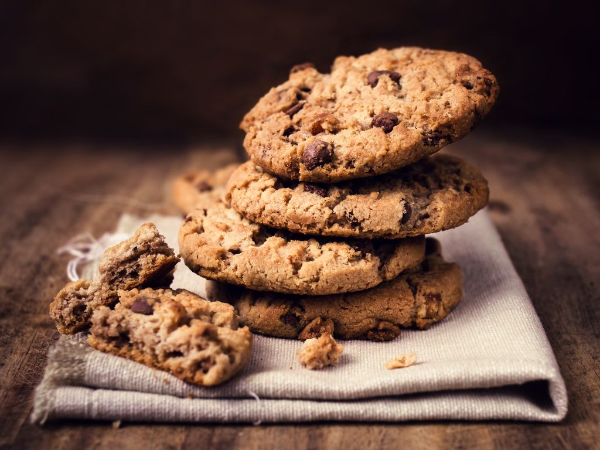

Pizza Tandoori
Cookie
Cheeseburger

Ingredienten
- 1 theelepel bakpoeder
- 1 theelepel zout
- 100 g pure chocolade
- 150 g bloem
- Vanille of 1 zakje vanillesuiker
- 85 g suiker
- 85 g zachte boter
- 1 ei
Bereiding
- Hak de chocolade in stukjes.
- Verwarm de oven voor op 180°C (stand 6). Meng in een kom 75 g boter, suiker, het hele ei en vanille. Roer alles door elkaar met een houten lepel.
- Voeg beetje bij beetje de bloem gemengd met bakpoeder, zout en de chocolade toe.
- Vet een bakplaat in met een stuk keukenpapier en vorm de koekjes op de bakplaat.
- Gebruik 2 eetlepels om kleine hoopjes te maken met voldoende ruimte ertussen; ze zullen uitzetten tijdens het bakken.
- Bak de koekjes 10 minuten in de oven.